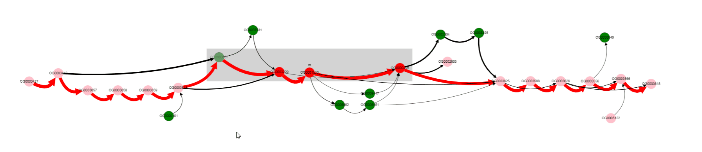
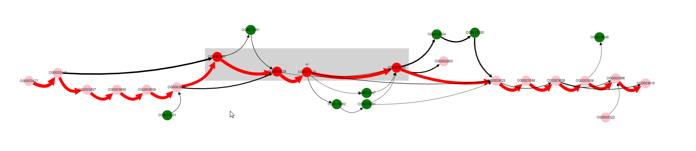

GUI description¶
GUI elements¶
GCB page consists of three main parts:
Complexity plot which shows complexity profile for selected genome and contig
Subgraph visualization of selected genome region
Left sliding panel to:
select genome and region to work with
search gene product names
download complexity values and graph.

Tutorials¶
Complexity analysis¶
Complexity is the measure of local genome variability. It is calculated for a set of genomes, one of which is selected as a reference. The greater the number of local changes in a certain neighborhood, the greater the value of complexity. Locality is set by the parameter Window, the larger it is, the more large-scale changes influences complexity value.
Thus, the three parameters that you need to select to calculate the complexity profile are: 1) set of genomes, 2) reference genome, 3) window size. All of them can be set in the left sliding panel.
At gcb.rcpcm.org we precalculated complexity profiles for over 140 prokaryotic species. Any set of genomes may be used in a stand-alone version. Window size equals 20 by default, and can be changed to other precalculated values (20, 50 and 100 values are available at gcb.rcpcm.org, any value may be used in a standalone version).
To obtain the complexity profile for a certain set of genomes (we will consider the set of Bacillus Subtilus available at gcb.rcpcm.org), follow these steps:
Open gcb.rcpcm.org in you web-browser.
Left panel with a number of settings will open automatically.
Click on the
Organismselector and chooseBacillus_subtilisitem.Click on the
Referenceselector and choose one of the available genomes. Let’s choose for exampleGCF_001889385.1_ASM188938v1_genomic (J-5)genome.
Genome name is constructed based on its filename (NCBI RefSeq filenames are used in the web version, genomes were downloaded from NCBI FTP server). In the web version strain name from the RefSeq is added to this name in brackets.
Click on the
Referenceselector.
The contigs of the selected genome will be shown. For complete (finished) genomes they corresponds to replicones (chromosome(s) and plasmids), for draft genomes they are some fragments of genome. You cannot see the complexity profile for all contigs at the same time, they must be selected in turn.
In case of
J-5genome, only one contig is present (NZ_CP018295.1), which means that it is a complete (finished) genome, with single chromosome and without plasmids.
Close left sliding panel by clicking on the some point outside it (e.g., on the middle of the page).
To open this panel once again, click on the icon with three horizontal lines on the left side of the page.
Complexity profile wile appear in the Complexity Plot panel.
A number of peaks and flat areas are visible in the complexity profile. Peaks corresponds to the genome regions in which many changes were fixed during evolution.
To get the numerical values of the complexity profile, open left sliding panel, select the File tab at the top of the panel, click
Download complexity valuesbutton.
Screen recording with these steps performed is available here.
Gene neigborhood analysis¶
Consider we are interested in a particular operon and we want to know more about its representation in a particular group of organisms. Let’s take lactose operon with its regulator in the Escherichia coli as an example (we will call it lac operon further).
First, we need to determine genome position of genes of interest. We can do it in multiple ways, e.g., from EcoCyc database or from NCBI Refseq. According to EcoCyc, the operon is located at 361249-366305 in K-12 substr. MG1655. Let’s first select Escherichia coli as Organism, in a dataset containing 300 E. coli genomes. Then, select K-12 MG1655 as Reference. Only one contig is present (finished genome, no plasmids), so we do not need to change Contig value.
{kind=link}
Then we should put the operon’s margin coordinates to text fields: Start coordinate and End coordinate.

Now click DRAW GRAPH button and graph-based representation of the operon will appear in Graph panel.

Gray rectangle is drawn around nodes located between Start coordinate and End coordinate (lac operon genes in this case).
Note that edges are of different colors. Red edges are from the reference genome (and also from genomes in which genes are located in the same order), black edges correspond to variants not present in the reference genome.
Nodes also have different colors. Nodes of genes from the reference genome are colored red, if they are located inbetween Start coordinate - neigbhourhood and End coordinate + neigbhourhood; they are colored pink, if present in the reference genome, but located outside the mentioned region. Nodes of genes, that are absent in a reference genome, are colored green.
More clear layout can be obtained manually by left clicking and dragging nodes with mouse.

By looking at thick edges designated with 1 and 2, we can tell that operon is located in a conserved context, in most of the genomes.
One of the operon’s genes is absent in some set of genomes. By left clicking on that gene, we can select it, and know its gene product (gene products are assigned with Prokka).
Missing gene is Galactoside acetyltransferase. This gene is not in operons of a number of genomes. what are that genomes? Let’s click on bypassing edge.
Click on the edge, selects it.
Selection of the edge results in two effects:
names of genomes corresponding to this edge appears in the
List of genomessection below the graphother edges, that contain at least one of the genomes from the selected edge, are colored blue. In this way, one can determine possible variants of gene neigbhorhoods, and in which genomes they are present.
For now we have determined, that a number of genomes does not contain Galactoside acetyltransferase. We can also notice nodes connected by a thin edges, which seems to represent other alternative variants of the operon. Let’s click on that nodes and on the nodes from the reference, to see their products.

We see that their names are the same, but their length differs a lot: 263 b.p. for an outlier gene and 1253 b.p. for a reference gene. Often, and also in this particular case, it comes from frameshit splitting some genes into parts, some of which may become part of homology groups representing original gene.
Finaly to verify our findings let’s switch to paralogues orthologization mode. To do it you should toggle Draw paralogous switcher on the top panel and click Draw button once more (be careful, your current graph layout will be lost, so consider opening new page). After clicking and dragging nodes it should be looking like this. A little bit scary.

This more complicated graph comes from not ignoring paralogous genes as it done by default, but instead showing all of them.
Combined analysis¶
With GCB, you can find which genes are in the hot spots of genome variability.
To do this, first select an organism, strain and replicon (chromosome or plasmids, complete genomes are reccomended to be used as reference).
Then, in complexity profile panel, click on some of the hot spots to set the current position. Current position is marked with vertical line in the complexity plot and also in Start and End coordinates in the left sliding panel).
Before proceding to the graph visualization, we recommend adjusting graph rendering options: set Minimal edge value to 10 (the more intense the hostpot, the bigger this value should be), Window to 10-20, depending on the hotspot width. Now press the DRAW GRAH button in the upper left corner of the Complexity panel. Changing colors will be visible above the graph draw buttons while it is being built, and then graph will apear in the Grpah panel.
To select some genes, for example, located at the variable region, press the left mouse button and while holding it move the cursor to surround the desired genes. Their products will apear in the bottom right part of the Graph panel.
Screen recording with these steps, and medium hot spot, is available here.
Publication-ready graph rendering¶
A graph-based representation of genome region can be exported in the form of JPEG image or a JSON file. To do this, fist draw some graph and then go to the left sliding panel, select File tab, select Graph subtab, click DOWNLOAD JPEG or DOWNLOAD JSON buttons.
JPEG file stores only a bitmap image, JSON file contains all infromation regarding the current graph, including its layout.
JSON file can be imported in Cytoscape for complete visualization control (customize the look of nodes, edges, do manual or one of the automatic layouts). Cytoscape graph renderings can be exported in a number of bitmap and vector formats (e.g., pdf, svg).
To import JSON graph file into Cytoscape, select File - Import - Network from File and select file, that was downloaded from GCB. Now you may arange graph nodes and adjust style.